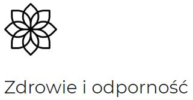

Strefa zdrowego stylu życia to miejsce, w którym zmieniamy małe nawyki, by osiągnąć duży efekt.
W świecie pełnym bodźców i wyzwań, żyjemy coraz intensywniej. Chcemy być zawsze pełni energii i gotowi do działania.
Żyjąc na pełnych obrotach, coraz trudniej dostarczyć sobie wszystkich potrzebnych witamin, minerałów i substancji odżywczych czyli paliwa, które odżywi komórki, da nam siłę, odporność i dobre samopoczucie.
Dlatego w strefie oferuję certyfikowane produkty Herbalife, które odżywiają na poziomie komórkowym. To stworzone przez ekspertów: dietetyków i lekarzy, pełnowartościowe zestawy, które dadzą Ci pewność, że każdego dnia dostarczasz potrzebne organizmowi składniki. Produkty dostosowuję do Twoich potrzeb, abyś czuł się dobrze i mógł więcej. Zapraszam do rozmowy, podczas której ustalimy wspólny cel naszej odżywczej podróży.

czyli suplementy i produkty specjalistyczne. Poznaj dożywienie na poziomie komórkowym i stworzone przez ekspertów suplementy diety z naturalnych, jakościowych składników.
czyli produkty dla osób aktywnych fizycznie. Zadbaj o odpowiednią regenerację po treningu i buduj wytrzymałość.
czyli produkty do kontroli masy ciała. Osiągnij najlepszą dla Ciebie wagę bez spadków energii, głodu i negatywnych skutków dla zdrowia.
czyli kosmetyki, które wchłaniają się na poziomie komórkowym. Piękna cera, włosy i paznokcie wymagają dbania zarówno od wewnątrz, jak i od zewnątrz.